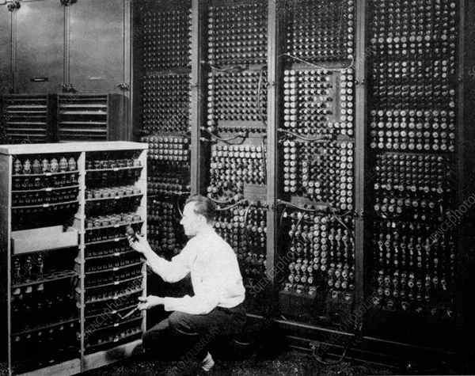

| Picture
| Description
| Year
|
|  |
J. Presper Eckert and John Mauchly built the successor of ENIAC, known as Electronic Discrete Variable Automatic Computer which was one of the earliest electronic computer that could process and store discrete data |
1944 |
 |
Computer scientist Grace Hopper develops the first computer language, which is eventually known as Common Business Oriented Language (COBOL), that allowed a computer user to use English-like words instead of numbers
to give the computer instructions. In 1997, a study showed that over 200 billion lines of COBOL code were still in existence. |
1953 |
 |
Developers at Bell Labs unveil UNIX, an operating system written in C programming language that addressed compatibility issues within programs. |
1969 |
|
Steve Jobs and Steve Wozniak start Apple Computers and introduced the world to the Apple I, the first computer with a single-circuit board. |
1976 |
|
Not to be outdone by Apple, IBM releases their first personal computer, the Acorn, with an Intel chip, two floppy disks, and an available color monitor. |
1981 |
 |
Instead of going with its annual tradition of naming a “Man of the Year”, Time Magazine does something a little different and names the computer its “Machine of the Year”. A senior writer noted in the article,
“Computers were once regarded as distant, ominous abstractions, like Big Brother. In 1982, they truly became personalized, brought down to scale, so that people could hold, prod and play with them." |
1982 |
 |
Apple releases the iTunes music store, giving users the ability to purchase songs within the program. In less than a week after its debut, over 1 million songs were downloaded.
Also, in 2003, the Blu-ray optical disc is released as the successor of the DVD.
And, who can forget the popular social networking site Myspace, which was founded in 2003. By 2005, it had more than 100 million users. |
2003 |